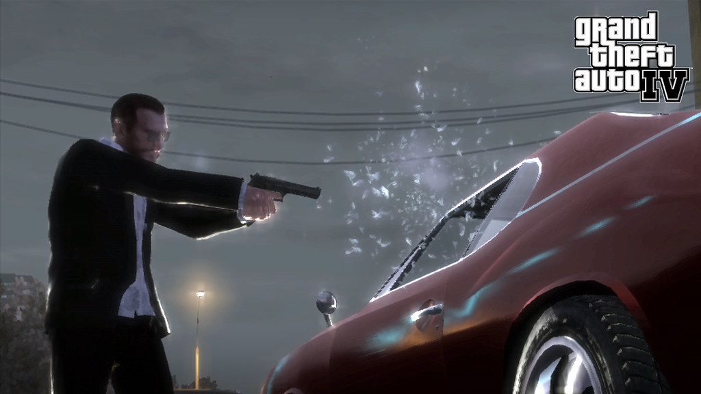

The gameis set in a new york city like place full of crime and murders.
Niko Bellic must fight to survive in this new country as the Russian mob is after him.
Many Celebrities are in the game including Ricky Gervais who performs live in it. The soundtrack is also banger.
Iin all the world is a large open place with tons of cars, people and places to go.
